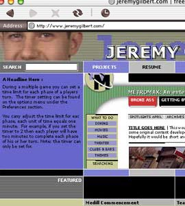

| VERSION 9.0 | NEXT Inspired by work from MetaDesign and the Cartoon Network this version of my Web site was to feature a blue-gray color palette and a modular design. The look and feel of the site mirrored pop art and showed a more viewer friendly side of my work -- compared to the heavy, constructivist Version 8.0. Unfortunately this vision proved very difficult to execute in HTML -- although a Flash prototype proved easier to work with -- and the concept was scrapped. |  |
|
| VERSION 9.0 : 7.00 | BACK/NEXT | ||